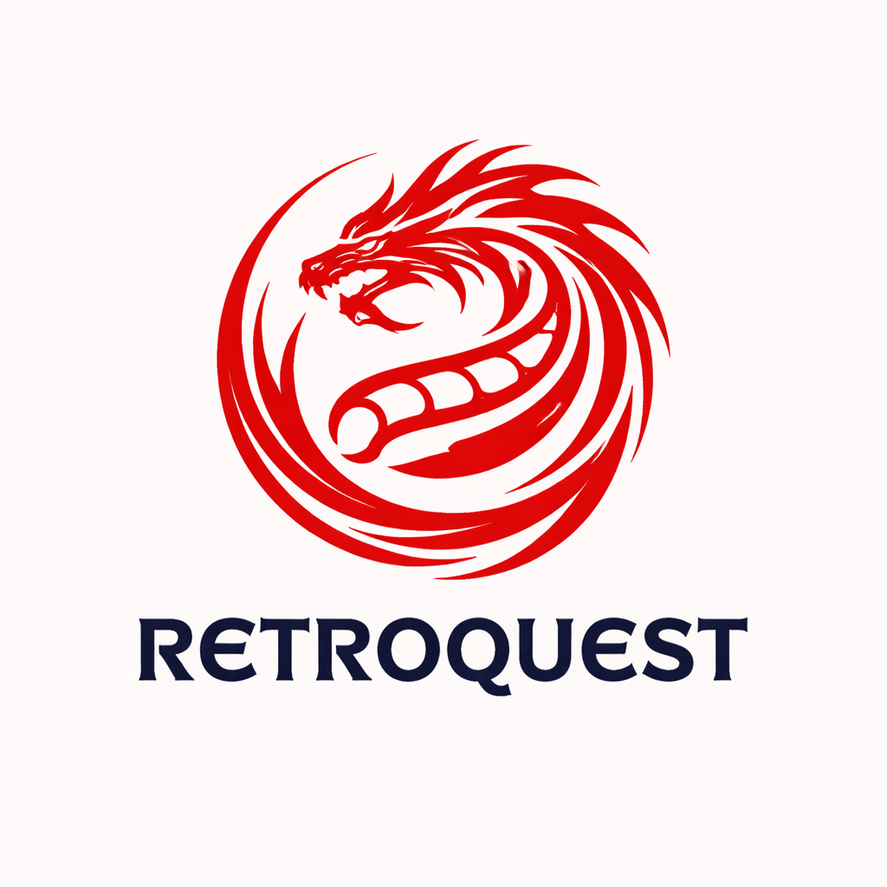

Retroquest Gaming Page
RetroQuest is a digital store specializing in the online sale of video games for PC, PS4, PS5, Xbox, and Nintendo Switch, as well as digital keys for Windows 10, Windows 11, and Microsoft Office. It's a platform designed for gamers and users looking for digital products quickly, securely, and reliably.
MORE